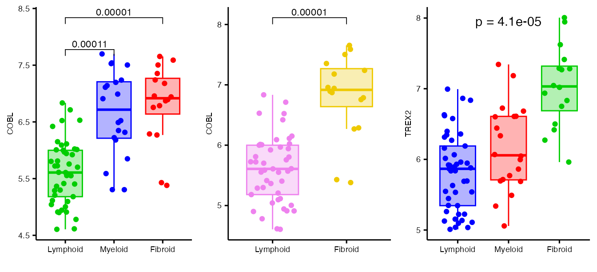
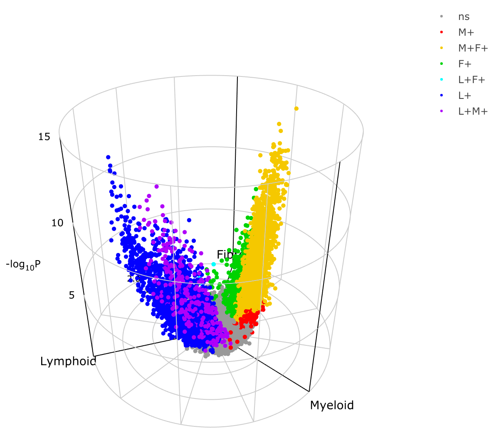

volcano3D

The volcano3D package provides a tool for analysis of three-class high dimensional data. It enables exploration of genes differentially expressed between three groups. Its main purpose is for the visualisation of differentially expressed genes in a three-dimensional volcano plot or three-way polar plot. These plots can be converted to interactive visualisations using plotly. The 3-way polar plots and 3d volcano plots can be applied to any data in which multiple attributes have been measured and their relative levels are being compared across three classes.
This vignette covers the basic features of the package using a small example data set. To explore more extensive examples and view the interactive radial and volcano plots, see the extended vignette which explores a case study from the PEAC rheumatoid arthritis trial (Pathobiology of Early Arthritis Cohort). The methodology has been published in Lewis, Myles J., et al. Molecular portraits of early rheumatoid arthritis identify clinical and treatment response phenotypes. Cell reports 28.9 (2019): 2455-2470. (DOI: 10.1016/j.celrep.2019.07.091) with an interactive, searchable web tool available at https://peac.hpc.qmul.ac.uk. This was creating as an R Shiny app and deployed to the web using a server.
There are also supplementary vignettes with further information on:


Examples
This vignette uses a subset of the 500 genes from the PEAC dataset to explore the package functions. This can be loaded using:
data("example_data")Which contains:
syn_example_rld- the log transformed expression datasyn_example_metawhich contains sample information and divides the samples into 3 classes.
Samples in this cohort fall into three histological ‘pathotype’ groups:
| Pathotype | Count |
|---|---|
| Lymphoid | 45 |
| Myeloid | 20 |
| Fibroid | 16 |
These will be used as the differential expression classes for the three-way analysis.
Creating Polar Coordinates
The function polar_coords() is used to map attributes to
polar coordinates. If you have RNA-Seq count data this step can be
skipped and you can use functions deseq_polar() or
voom_polar() instead (see Gene Expression pipeline).
polar_coords accepts raw data and performs all the
calculations needed to generate coordinates, colours etc for plotting
either a 3d volcano plot or radial 3-way plot. In brief, the function
calculates the mean of each attribute/ variable for each group and maps
the mean level per group onto polar coordinates along 3 axes in the x-y
plane. The z axis is plotted as -log10(p-value) of the group
statistical test (e.g. likelihood ratio test, one-way ANOVA or
Kruskal-Wallis test).
A table of p-values can be supplied by the user (see table below for
formatting requirements). If a table of p-values is absent, p-values are
automatically calculated by polar_coords(). By default
one-way ANOVA is used for the group comparison and t-tests are used for
pairwise tests.
polar_coords() has the following inputs:
| Variable | Details |
|---|---|
|
outcome (required) |
Vector containing three-level factor indicating which of the three classes each sample belongs to. |
|
data (required) |
A dataframe or matrix containing data to be compared between the three classes (e.g. gene expression data). Note that variables are in columns, so gene expression data will need to be transposed. This is used to calculate z-score and fold change, so for gene expression count data it should be normalised such as log transformed or variance stabilised count transformation. |
|
pvals (optional) |
the pvals matrix which contains the statistical significance of probes or attributes between classes. This contains:
|
|
padj (optional) |
Matrix containing the adjusted p-values matching the pvals matrix. |
| pcutoff | Cut-off for p-value significance |
| scheme | Vector of colours starting with non-significant attributes |
| labs |
Optional character vector for labelling classes. Default
NULL leads to abbreviated labels based on levels in
outcome using abbreviate(). A vector of length
3 with custom abbreviated names for the outcome levels can be supplied.
Otherwise a vector length 7 is expected, of the form “ns”, “B+”, “B+C+”,
“C+”, “A+C+”, “A+”, “A+B+”, where “ns” means non-significant and A, B, C
refer to levels 1, 2, 3 in outcome, and must be in the
correct order.
|
This can be applied to the example data as below:
data("example_data")
syn_polar <- polar_coords(outcome = syn_example_meta$Pathotype,
data = t(syn_example_rld))This creates a ‘volc3d’ class object for downstream plotting.
Gene expression pipeline
RNA-Sequencing gene expression count data can be compared for differentially expressed genes between 3 classes using 2 pipeline functions to allow statistical analysis by Bioconductor packages ‘DESeq2’ and ‘limma voom’ to quickly generate a polar plotting object of class ‘volc3d’ which can be plotted either as a 2d polar plot with 3 axes or as a 3d cylindrical plot with a 3d volcano plot.
Two functions deseq_polar() and
voom_polar() are available. They both take RNA-Seq count
data objects as input and extract correct statistical results and then
internally call polar_coords() to create a ‘volc3d’ class
object which can be plotted straightaway.
Method using DESeq2
This takes 2 DESeqDataSet objects and converts the
results to a ‘volc3d’ class object for plotting. object is
an object of class ‘DESeqDataSet’ with the full design formula. Note the
function DESeq needs to have been previously run on this
object. objectLRT is an object of class ‘DESeqDataSet’ with
the reduced design formula. The function DESeq needs to
have been run on this object with DESeq argument
test="LRT".
Note that in the DESeq2 design formula, the 3-class variable of interest should be first.
library(DESeq2)
# setup initial dataset from Tximport
dds <- DESeqDataSetFromTximport(txi = syn_txi,
colData = syn_metadata,
design = ~ Pathotype + Batch + Gender)
# initial analysis run
dds_DE <- DESeq(dds)
# likelihood ratio test on 'Pathotype'
dds_LRT <- DESeq(dds, test = "LRT", reduced = ~ Batch + Gender, parallel = TRUE)
# create 'volc3d' class object for plotting
res <- deseq_polar(dds_DE, dds_LRT, "Pathotype")
# plot 3d volcano plot
volcano3D(res)Method using limma voom
The method for limma voom is faster and takes a design formula, metadata and raw count data. The Bioconductor packages ‘limma’ and ‘edgeR’ are used to analyse the data using the ‘voom’ method. The results are converted to a ‘volc3d’ object ready for plotting a 3d volcano plot or 3-way polar plot.
Note the design formula must be of the form
~ 0 + outcome + .... The 3-class outcome variable must be
the first variable after the ‘0’, and this variable must be a factor
with exactly 3 levels.
Radial Plots
The differential expression can now be visualised on an interactive
radial plot using radial_plotly.
radial_plotly(syn_polar) Unfortunately CRAN does not support interactive plotly in the vignette, but these can be viewed on the extended vignette. When interactive, it is possible to identify genes for future interrogation by hovering over certain markers.
radial_plotly produces an SVG based plotly object by
default. With 10,000s of points SVG can be slow, so for large number of
points we recommend switching to webGL by piping the plotly object to
toWebGL().
radial_plotly(syn_polar) %>% toWebGL()A very similar looking static ggplot image can be created using
radial_ggplot:
radial_ggplot(syn_polar,
marker_size = 2.3,
legend_size = 10) +
theme(legend.position = "right")
Boxplots
Any one specific variable (such as a gene) can be interrogated using a boxplot to investigate differences between groups:
plot1 <- boxplot_trio(syn_polar,
value = "COBL",
text_size = 7,
test = "polar_padj",
my_comparisons=list(c("Lymphoid", "Myeloid"),
c("Lymphoid", "Fibroid")))
plot2 <- boxplot_trio(syn_polar,
value = "COBL",
box_colours = c("violet", "gold2"),
levels_order = c("Lymphoid", "Fibroid"),
text_size = 7,
test = "polar_padj"
)
plot3 <- boxplot_trio(syn_polar,
value = "TREX2",
text_size = 7,
stat_size=2.5,
test = "polar_multi_padj",
levels_order = c("Lymphoid", "Myeloid", "Fibroid"),
box_colours = c("blue", "red", "green3"))
ggarrange(plot1, plot2, plot3, ncol=3)
3D Volcano Plot
Lastly, the 3D volcano plot can be used to project 3-way differential comparisons such as differential gene expression between 3 classes onto cylindrical polar coordinates.
p <- volcano3D(syn_polar)
p
A fully interactive demonstration of this plot can be viewed at: https://peac.hpc.qmul.ac.uk/
Spinning Animation
It is also possible to animate spinning/rotation of the plot in 3d
using the add_animation function which adds a custom plotly
modeBar button:
A working demo of this function can be viewed at https://peac.hpc.qmul.ac.uk/ by clicking on the ‘play’ button in the plotly modeBar to spin the plot.
Saving Plotly Plots
Static Images
There are a few ways to save plotly plots as static images. Firstly plotly offers a download button ( ) in the figure mode bar (appears top right). By default this saves images as png, however it is possible to convert to svg, jpeg or webp using:
Interactive HTML
The full plotly objects can be saved to HTML by converting them to widgets and saving with the htmlwidgets package:
htmlwidgets::saveWidget(as_widget(p), "volcano3D.html")Citation
volcano3D was developed by the bioinformatics team at the Experimental Medicine & Rheumatology department and Centre for Translational Bioinformatics at Queen Mary University London.
If you use this package please cite as:
citation("volcano3D")##
## To cite package 'volcano3D' in publications use:
##
## Goldmann K, Lewis M (2020). _volcano3D: 3D Volcano Plots and Polar
## Plots for Three-Class Data_.
## https://katrionagoldmann.github.io/volcano3D/index.html,
## https://github.com/KatrionaGoldmann/volcano3D.
##
## A BibTeX entry for LaTeX users is
##
## @Manual{,
## title = {volcano3D: 3D Volcano Plots and Polar Plots for Three-Class Data},
## author = {Katriona Goldmann and Myles Lewis},
## year = {2020},
## note = {https://katrionagoldmann.github.io/volcano3D/index.html, https://github.com/KatrionaGoldmann/volcano3D},
## }or using:
Lewis, Myles J., et al. Molecular portraits of early rheumatoid arthritis identify clinical and treatment response phenotypes. Cell reports 28.9 (2019): 2455-2470.